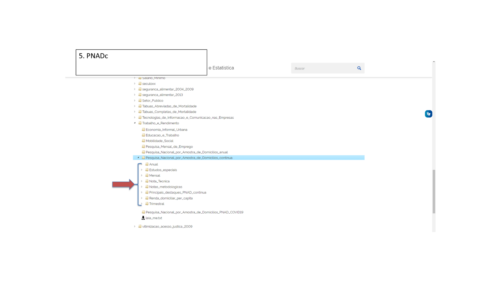

Pesquisa Nacional por Amostra de Domicílios Contínua (PNADC)
Dia 1 - Conceitos e aplicações da PNADC
Doutorando, Centre d’Estudis Demogràfics (CED, Espanha)
Pesquisador Assistente (Cebrap)
October 6, 2025
Antes de começar…
lista de presença!

Estrutura da aula
Tópicos que vamos cobrir hoje são:
Introdução à PNADC
Operacionalização da coleta da pesquisa
Esquema e estratégia de divulgação
Introdução à PNADC
O que é essa pesquisa?
PNADC
Objetivo
Acompanhar flutuações trimestrais e a evolução (no curto, médio e longo prazo) da força de trabalho, bem como de outras informações necessárias para o estudo do desenvolvimento socioeconômico no país.
PNADC
Objetivo
Acompanhar flutuações trimestrais e a evolução (no curto, médio e longo prazo) da força de trabalho, bem como de outras informações necessárias para o estudo do desenvolvimento socioeconômico no país.
Características
Está dentro de um conjunto de pesquisas amostrais domiciliares que ocorrem em todo o mundo.
Feita desde 2012.
- Testes começaram em 2009.
É realizada em cerca de 3.500 municípios.
Cobre todo o território brasileiro1.
Foi criada para substituir outras duas pesquisas amostrais do IBGE: PNAD e PME.
SIPD - Sistema Integrado de Pesquisas Domiciliares

A PNADC faz parte do SIPD.
Surgiu em 2007
Buscou integrar as distintas pesquisas domiciliares realizadas no IBGE em um sistema único, de forma que:
Garantisse uma mesma metodologia de amostragem
Assegurasse um núcleo de quesitos que fossem coletados do mesmo modo
Otimizasse os temas e objetivos de cada pesquisa amostral, para evitar sobreposição.
SIPD - Sistema Integrado de Pesquisas Domiciliares
Dois pontos fundamentais do SIPD:
Passou a tratar a PNAD Contínua como a pesquisa amostral domiciliar regular e que incorporasse outros temas tratados com amplitude temporal maior em outras pesquisas.
A Amostra Mestra (AM)
É a fonte pela qual se constrói as subamostras das demais pesquisas do IBGE
Tem como base o(s) Censo(s) Demográfico(s)
Alguns exemplos do uso:
POF: usa 40% das UPAs1 da AM.
PNADC: usa 100% das UPAs da AM
Retrospectiva: da PNAD (e PME) à PNADC
Retrospectiva: da PNAD (e PME) à PNADC
Diferenças fundamentais
Representatividade geográfica da amostra
PNAD (Antiga): Brasil, Grandes Regiões, UF e 9 RMs
PME: 6 RMs.
PNADC: Brasil, Grandes Regiões, UF, RMs que contém capital, RIDE, capitais.
Periodicidade da divulgação
PNAD (Antiga): Anual
PME: Anual
PNADC: Mensal, Trimestral e Anual.
Retrospectiva: da PNAD (e PME) à PNADC

Retrospectiva: da PNAD (e PME) à PNADC
Ela nos permite:
Acompanhar o mesmo domicílio ao longo de 5 trimestres/visitas
Garante uma maior precisão das suas estimativas
Permite uma maior desagregação espacial das informações
Incorporação de novos temas em uma mesma base
Operacionalização da coleta da pesquisa
Construção da amostra
População e amostra
Não somente relacionado ao desenho de coleta dos dados, mas todas as estatísticas que calculamos estão associadas a esses conceitos
População
Um conjunto de elementos (animados ou inanimados) que compartilham de alguma característica definida e que seja relevante para o/a pesquisador/a ou pesquisa.
Amostra
Um fragmento, parte, subconjunto da população estudada. É definida, em geral, através de critérios explícitos.
Unidade de coleta e divulgação
A amostra é calculada com base nos domicílios do Brasil.
Visita-se estes domicílios selecionados na amostra e, para cada um deles, preenche-se as informações em um tablet.
É coletada informações tanto a nível do domicílio, quanto a nível das pessoas (moradores).
Os dados são divulgados (apresentados quando os importamos) na unidade da pessoa.
Como é construída a amostra?
A PNADC utiliza de uma amostragem probabilística por conglomerado em dois estágios, com estratificação geográfica:
Como é construída a amostra?
A PNADC utiliza de uma amostragem probabilística por conglomerado em dois estágios, com estratificação geográfica:
Estágio 1
Seleção das Unidades Primárias de Amostragem (UPAs).
(Um breve parêntesis sobre as UPAs)
UPA e o Censo 2022
De onde as UPAs vêm?
São calculadas com base na Amostra Mestra
São compostas por um ou mais setores censitários contíguos;
UPA e o Censo 2022
De onde as UPAs vêm?
São calculadas com base na Amostra Mestra
São compostas por um ou mais setores censitários contíguos;
O que há de novo?
Novo critério para tamanho mínimo das UPAs: aumento do número de domicílios particulares permanentes ocupados (DPPOs) que as compõe.
Redefinição da estratificação para criação das UPAs1
Isso entra em vigor a partir de 2025, finalizando a transição no terceiro trimestre de 2026.
Como é construída a amostra?
A PNADC utiliza de uma amostragem probabilística por conglomerado em dois estágios:
Estágio 1
Seleção das Unidades Primárias de Amostragem (UPAs).
Estágio 2
Seleção dos domicílios
Como é construída a amostra?
Estagio 1: Seleção das UPAs
Por divisão administrativa
Geográfica/espacial com base na renda média dos responsáveis.
- Renda média do responsável
Situação do domicílio: Rural - Urbano - Favelas e Comunidades Urbanas1.
Estrato Estatístico: Renda total das pessoas responsáveis e quantidade de Domicílios Particulares e Permanentes Ocupados (DPPOs).
Estagio 2: Seleção dos domicílios
Em cada UPA, é selecionado aleatoriamente um conjunto de domicílios a serem entrevistados com base no CNEFE.
Estagio 2: Seleção dos domicílios
Mudanças entre os censos:
Censo 2010
- O tamanho da amostra de domicílios em cada UPA foi fixado em 14.
Censo 2022
Critério para tamanho dos domicílios redefinido segundo situação:
Rural: Mínimo de 60 DPPOs
Urbano + FCU: Mínimo de 90 DPPOs.
Aumento reduz esgotamento das UPAs, aumenta precisão das estimativas e otimização dos gastos públicos.
Operacionalização da coleta da pesquisa
Esquema de rotação da amostra: 1-2(5)
Esquema de rotação 1-2(5)
Planejamento da coleta
- Periodicidade da coleta é trimestral, ou seja, a amostra total de domicílios é coletada ao longo de 3 meses para, ao final deste ciclo, divulgar os dados1.
Esquema de rotação 1-2(5)
Planejamento da coleta
- Periodicidade da coleta é trimestral, ou seja, a amostra total de domicílios é coletada ao longo de 3 meses para, ao final deste ciclo, divulgar os dados1.
O esquema
1: Uma visita em um mês;
2: Dois meses subsequentes sem visita;
5: Repete-se esse ciclo por 5 viistas.
Esquema de rotação 1-2(5)
Esquema de rotação 1-2(5)

Esquema de rotação 1-2(5)
Esquema de rotação 1-2(5)
Esquema de rotação 1-2(5)
Esquema de rotação 1-2(5)
Pausa!

Esquemas e estratégias de divulgação
Calendários, temas e formas de divulgação
Previsões de datas de divulgação
No site do IBGE, há toda a previsão de datas.
Temas e tópicos presentes
Formas de divulgação da pesquisa
Painel interativo
SIDRA
Microdados
Painel interativo PNADC
Pode ser acessado via: https://painel.ibge.gov.br/pnadc/
Painel interativo PNADC
Pode ser acessado via: https://painel.ibge.gov.br/pnadc/
Painel interativo PNADC
Pode ser acessado via: https://painel.ibge.gov.br/pnadc/
Painel interativo PNADC
Pode ser acessado via: https://painel.ibge.gov.br/pnadc/
Painel interativo PNADC
Pode ser acessado via: https://painel.ibge.gov.br/pnadc/
Exercício!
Faça um mapa com duas camadas para o ano mais recente disponível:
Taxa de escolarização para crianças de 4 a 5 anos por estado (UF)
Taxa de escolarização por grupo de idade (4 e 5 anos) - Municípios das capitais
É um ótimo recurso para trabalharmos de forma mais genérica, rápida, sem precisar baixar os microdados (!)
O SIDRA é importante para:
Validarmos ciclos de análises que estivermos construindo
Obter informações gerais rapidamente
Nele, poderemos obter distintas informações:
Características gerais dos moradores ou domicílios
Educação
Características do mercado de trabalho
…
Limitação
- Em geral, os cruzamentos disponíveis são muito limitados.
Sistema do IBGE de Recuperação de Automática
Pode ser acessado via: https://sidra.ibge.gov.br/pesquisa/pnadca/tabelas
Exemplo: População residente por sexo, raça e regiões.
Sistema do IBGE de Recuperação de Automática
Pode ser acessado via: https://sidra.ibge.gov.br/pesquisa/pnadca/tabelas
Exemplo: População residente por sexo, raça e regiões.
Sistema do IBGE de Recuperação de Automática
Pode ser acessado via: https://sidra.ibge.gov.br/pesquisa/pnadca/tabelas
Exemplo: População residente por sexo, raça e regiões.
Sistema do IBGE de Recuperação de Automática
Pode ser acessado via: https://sidra.ibge.gov.br/pesquisa/pnadca/tabelas
Exemplo: População residente por sexo, raça e regiões.
Sistema do IBGE de Recuperação de Automática
Pode ser acessado via: https://sidra.ibge.gov.br/pesquisa/pnadca/tabelas
Exemplo: População residente por sexo, raça e regiões.
Sistema do IBGE de Recuperação de Automática
Pode ser acessado via: https://sidra.ibge.gov.br/pesquisa/pnadca/tabelas
Exemplo: População residente por sexo, raça e regiões.
Sistema do IBGE de Recuperação de Automática
Pode ser acessado via: https://sidra.ibge.gov.br/pesquisa/pnadca/tabelas
Exemplo: População residente por sexo, raça e regiões.
Sistema do IBGE de Recuperação de Automática
Pode ser acessado via: https://sidra.ibge.gov.br/pesquisa/pnadca/tabelas
Exemplo: População residente por sexo, raça e regiões.
Exercício!
Utilizando o SIDRA, responda:
Qual é o principal motivo para as pessoas não terem viajado no Brasil em 2024? (8456)
Qual o principal motivo da viagem (pessoais ou profissionais) de quem realizou viagens nos últimos 3 meses antes da pesquisa, em 2019, 2020 e 2024? E qual o número de pessoas com viagens nas quais passaram apenas 1 pernoite fora de casa em 2024? (7204 e 6414)
Em 2024, qual a renda domiciliar per capita média em domicílios com acesso a televisão por assinatura no Norte? E dos domicílios que da região Sul que não tem acesso á televisão por assinatura? (7280)
Em 2024, qual a região metropolitana do país com mais proporção de pessoas que utilizaram internet? E qual a RM com menor proporção? (7325)
Faça um gráfico da taxa de analfabetismo das pessoas com 15 anos ou mais de idade em 2019, por grandes regiões. (7113)
Microdados
O microdado é a forma mais desagregada em que a pesquisa coletou dados.
Potencialidades
Permite que façamos tudo o que o SIDRA não nos oferece
Realizar análises com variáveis que construamos;
Trabalhar com os mais diversos recortes que queiramos;
Fazer cálculo de indicadores.
O acesso aos microdados da PNAD Contínua é público:
Diretamente via navegadores
Via R (Aula 2!)
Microdados
Forma de acesso aos microdados via navegador.
Microdados
Forma de acesso aos microdados via navegador.
Microdados
Forma de acesso aos microdados via navegador.
Microdados
Forma de acesso aos microdados via navegador.

Microdados
Forma de acesso aos microdados via navegador.

Microdados
Forma de acesso aos microdados via navegador.
Isso é tudo para hoje!
Para próxima aula:
- Exercícios sobre Painel Interativo e SIDRA
- Exercício de definição dos temas de interesse
- Leitura de material para aula de hoje (caso não tenha lido)
- Leitura de material para a aula seguinte (Ver ementa)
Isso é tudo para hoje!
Orientações sobre o exercício: O que faremos com os temas complementares do dia 4?
- Na pasta compartilhada da aula, buscar temas complementares que gostariam de ter algum aprofundamento maior.
Disponibilizei o arquivo “word” intitulado “Alguns tópicos complementares”.
Podem sugerir outros tópicos, usando: Pasta “Dicionários PNADC”, arquivo dos suplementos e temas (“IBGE - Pesquisas Suplementares Anuais.pdf”)
Abrir link da planilha compartilhada: Aba “Temas de interesse”.
Assinalar um tema de interesse

Presidência
Diretoria Administrativa
Diretoria Científica
Coordenação de Seminários
Coordenação de Cursos
Adrian Gurza Lavalle
Victor Callil
Arilson Favareto
Bianca Tavolari
Monise Fernandes Picanço
Curso
Pesquisa Nacional por Amostra de Domicílios Contínua (PNADC)
Ministrante
Thiago Cordeiro Almeida
E-mail: thiagocordalmeida@gmail.com
Github: @thiagocalm

cebrap.lab - PNADC